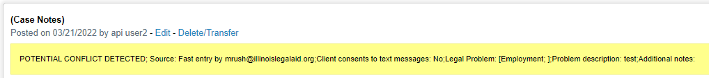
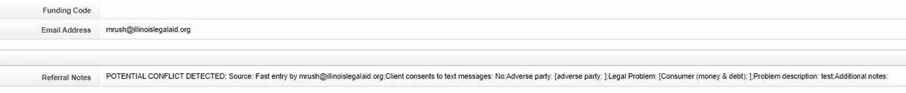

Conflict API
The conflict check API is accessible at https://[site].legalserver.org/api/v1/conflict_check and request basic authorization from the specific instance of Legal Server
LegalServer provides documentation for the API.
Example JSON body
{
"first": "string",
"middle": "string",
"last": "string",
"dob": "2020-10-15",
"visa_number": "string",
"phones": [
{
"number": "555-555-5555, 5555555555, (555) 555-5555",
"type": "business"
}
]
}
Example call using Axios Node.js
var axios = require('axios');
var data = JSON.stringify({
"first": "string",
"middle": "string",
"last": "string",
"dob": "2020-10-15",
"visa_number": "string",
"phones": [
{
"number": "555-555-5555, 5555555555, (555) 555-5555",
"type": "business"
}
]
});
var config = {
method: 'post',
url: 'https://legalaidchicago-demo.legalserver.org/api/v1/conflict_check',
headers: {
'Content-Type': 'application/json'
},
data : data
};
axios(config)
.then(function (response) {
console.log(JSON.stringify(response.data));
})
.catch(function (error) {
console.log(error);
});
Sample responses
Lowest score example:
{
"status": 200,
"message": "conflict check completed successfully",
"interval": "lowest",
"score": 17
}
Highest score example:
{
"status": 200,
"message": "conflict check completed successfully",
"interval": "highest",
"score": 100
}
Integration with Statewide Website
Each organization controls whether to support conflict checking within OTIS and at what level. Each participating organization must then provide appropriate credentials and set the level of conflict required to trigger a conflict warning.
Configuration
ILAO staff enter the appropriate configuration settings under “Legal Server Configuration.” This includes:
Program LegalServer URL
Program API username
Program API password
Conflict warning level: this is a multi-select of Highest, High, Low, and Lowest. An exact match is required. So selecting “High” will not cause a warning if the conflict check results in Highest but checking both would.
Fast Entry
When a conflict is detected, a warning appears to allow the submitted to pick a different organization. Notes for the e-transfer are updated to prepend “POTENTIAL CONFLICT DETECTED”
Referring Agency’s Notes
Partner’s Referral Notes
